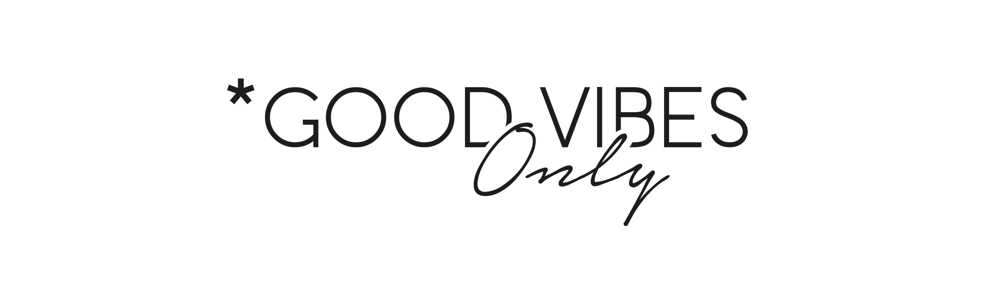

Everybody will have to deal with toxic people in a way or another, at university, at work maybe even with some relative. What this post is about is how i used to deal with these kind of people driven by envy or just their own boredom.
How can you recognize a toxic person?
Every person I've met with this sort of behavior usually are easy to recognize by their lack of motivation in life. These a some of the behaviors that characterize them in my humble opinion:
- For them only exists their way of doing something and that’s the correct way. This is obviously not true
- They will throw at you phrases that can be summarize to 'you can't do X thing' or '...but you don't know anything about X'. This a form of underestimating you and your skills
- They use to have a strong tendency to make judgments about other people with no absolutely zero about them. You don’t know what someone has been through, you don’t know his story so don’t judge another person
- They will try to stop you from doing what you want and they won't stop trying to drag you to the things they're good at and they can maintain a dominant position. This way they will always be above you and will keep you from improve
- Another way to recognize a toxic person is looking at what he talks about a thing. If he only talks about the negative aspects and emphasize them instead of centering the conversation in the good parts, ah…, begin to suspect. They are negative people by nature and instead lift you they will try to push you down
What to do
My personal experience says that the best option is to try to avoid them under all circumstances. But as I told you at the beginning of this post you will deal with people of all kinds during life so don’t worry, it’s just another experience you have to go thorough. In consequence, if you are forced to work in any way with people of this kind, just keep a cordial and professional relationship with them, do not include them in you social circle or your life.
And as a final advice, one I use myself, transform their attempts of making you desist in and extra boost of energy to get to your goals. As one quote I read once, Tell me I can’t, then watch me work twice as hard to prove you wrong
Have a nice day :)
